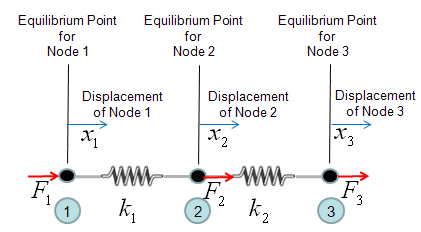
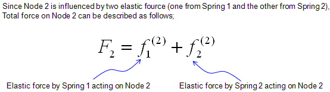
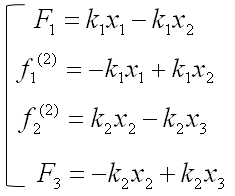
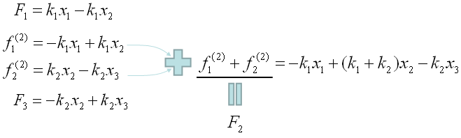
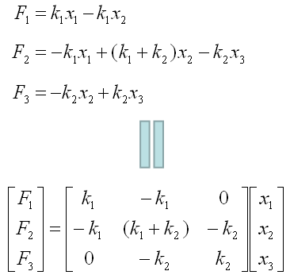

| FEM(Finite Element Method) - Simple Spring |
|
First I think I should say sorry if you clicked this link in the hope to clear off all the clouds over your head after struggling for so long time trying to understand the details of FEM -:). This is not at all for that level. I just want to give you an idea of application of the mathematical tool called "Matrix" and how a matrix equation is generated from a simple FEM problem.It is true that one of the core part of FEM is converting the problem into a matrix equation, but in reality nobody is doing this by hand because it is too complex to do it manually. There are a lot of software package doing this kind of jobs for various problem spaces. However, understanding this process would be very useful both for understanding the problem space and understanding the logics being used by those software.
Let's take a very simple cases as follows. You already have seen this problem on many text book or internet pages. Two springs are connected as follows. Let's assume that Node 1 is fixed to a point (like fixed to a wall) and you are pulling away the Node 3. The question how much each of the spring will be elongated ?

One thing you have to think before you start creating the mathmatical model. It is about node 2. If you see the picture above, node 2 is connected to both spring 1 and spring 2. So it would be experiencing forces from two springs and the force labed as F2 is the total force of the two componend forces. So let's define F2 as follows.

Now by applying the famous hook's law (F = kx), you can draw out four equations as follows.

Since the two equation (the second and third one is the force being applied to a single node (Node 2). We can combine the two equeation and as result we would finaly have three equations as follows.

Now we have a set of simultaneous equation comprised of 3 equations. As you already seen above, a simultaneous equation can easily be converted into a matrix equation as follows.

We saw a very simple example of drawing out a matrix equation from a small set of FEM situation, but in real situation.. most of this process is being automatically done by a software. The procedure that the software use to create the final matrix would be a little different from what I described here.. but the resulting matrix equation should be same.
|